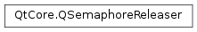

QSemaphoreReleaser¶
Note
This class was introduced in Qt 5.10.
Detailed Description¶
The
PySide2.QtCore.QSemaphoreReleaserclass provides exception-safe deferral of aQSemaphore.release()call
PySide2.QtCore.QSemaphoreReleasercan be used wherever you would otherwise useQSemaphore.release(). Constructing aPySide2.QtCore.QSemaphoreReleaserdefers the release() call on the semaphore until thePySide2.QtCore.QSemaphoreReleaseris destroyed (see RAII pattern).You can use this to reliably release a semaphore to avoid dead-lock in the face of exceptions or early returns:
// ... do something that may throw or return early sem.release();If an early return is taken or an exception is thrown before the
sem.release()call is reached, the semaphore is not released, possibly preventing the thread waiting in the correspondingsem.acquire()call from ever continuing execution.When using RAII instead:
const QSemaphoreReleaser releaser(sem); // ... do something that may throw or early return // implicitly calls sem.release() here and at every other return in betweenthis can no longer happen, because the compiler will make sure that the
PySide2.QtCore.QSemaphoreReleaserdestructor is always called, and therefore the semaphore is always released.
PySide2.QtCore.QSemaphoreReleaseris move-enabled and can therefore be returned from functions to transfer responsibility for releasing a semaphore out of a function or a scope:{ // some scope QSemaphoreReleaser releaser; // does nothing // ... if (someCondition) { releaser = QSemaphoreReleaser(sem); // ... } // ... } // conditionally calls sem.release(), depending on someConditionA
PySide2.QtCore.QSemaphoreReleasercan be canceled by a call toPySide2.QtCore.QSemaphoreReleaser.cancel(). A canceled semaphore releaser will no longer callQSemaphore.release()in its destructor.See also
-
class
PySide2.QtCore.QSemaphoreReleaser¶ -
class
PySide2.QtCore.QSemaphoreReleaser(sem[, n=1]) -
class
PySide2.QtCore.QSemaphoreReleaser(sem[, n=1]) Parameters: - sem –
PySide2.QtCore.QSemaphore - n –
PySide2.QtCore.int
Default constructor. Creates a
PySide2.QtCore.QSemaphoreReleaserthat does nothing.Constructor. Stores the arguments and calls
sem.release(n) in the destructor.Constructor. Stores the arguments and calls
sem->release(n) in the destructor.- sem –
-
PySide2.QtCore.QSemaphoreReleaser.cancel()¶ Return type: PySide2.QtCore.QSemaphoreCancels this
PySide2.QtCore.QSemaphoreReleasersuch that the destructor will no longer callsemaphore()->release(). Returns the value ofPySide2.QtCore.QSemaphoreReleaser.semaphore()before this call. After this call,PySide2.QtCore.QSemaphoreReleaser.semaphore()will returnnullptr.To enable again, assign a new
PySide2.QtCore.QSemaphoreReleaser:releaser.cancel(); // avoid releasing old semaphore() releaser = QSemaphoreReleaser(sem, 42); // now will call sem.release(42) when 'releaser' is destroyed
-
PySide2.QtCore.QSemaphoreReleaser.semaphore()¶ Return type: PySide2.QtCore.QSemaphoreReturns a pointer to the
PySide2.QtCore.QSemaphoreobject provided to the constructor, or by the last move assignment, if any. Otherwise, returnsnullptr.
-
PySide2.QtCore.QSemaphoreReleaser.swap(other)¶ Parameters: other – PySide2.QtCore.QSemaphoreReleaserExchanges the responsibilites of
*thisandother.Unlike move assignment, neither of the two objects ever releases its semaphore, if any, as a consequence of swapping.
Therefore this function is very fast and never fails.
© 2018 The Qt Company Ltd. Documentation contributions included herein are the copyrights of their respective owners. The documentation provided herein is licensed under the terms of the GNU Free Documentation License version 1.3 as published by the Free Software Foundation. Qt and respective logos are trademarks of The Qt Company Ltd. in Finland and/or other countries worldwide. All other trademarks are property of their respective owners.